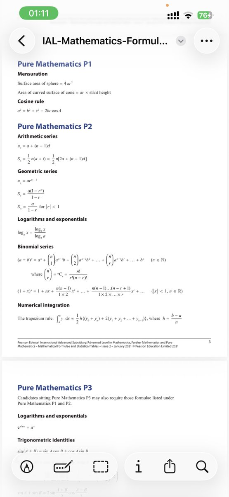
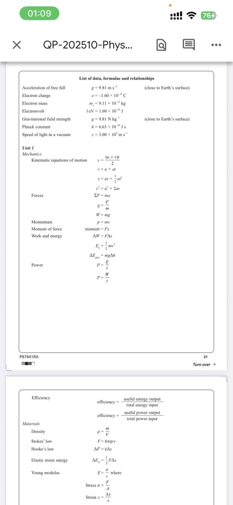

RedFox（2代目）
@FoxRed695449
@wmy072011 IAL考试的话数学、物理是会给部分公式（不是全部）的
数学是会在考试的时候发一本公式表
物理是在试卷的最后


十二点
@wmy072011
@FoxRed695449 你们这个物理的过程也要求的好少 竟然不用把公式写上去 我们需要把题目里的条件抄一遍 把公式写上去之后再代数 这样方便老师判分 如果不写公式即使答案对了也得扣分。。